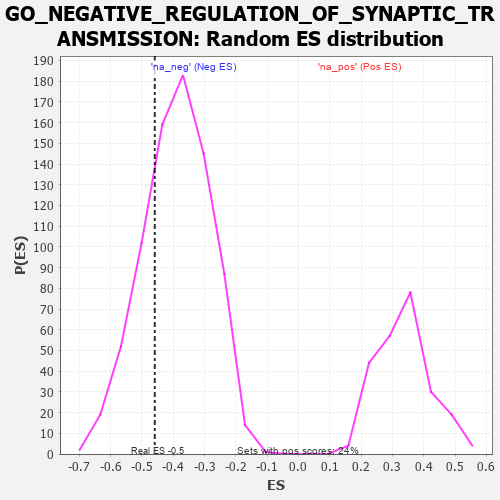

| | | Dataset | 7d |
| Phenotype | NoPhenotypeAvailable |
| Upregulated in class | na_neg |
| GeneSet | GO_NEGATIVE_REGULATION_OF_SYNAPTIC_TRANSMISSION |
| Enrichment Score (ES) | -0.4586962 |
| Normalized Enrichment Score (NES) | -1.1809366 |
| Nominal p-value | 0.2539267 |
| FDR q-value | 0.65496093 |
| FWER p-Value | 1.0 |
Table: GSEA Results Summary
 Fig 1: Enrichment plot: GO_NEGATIVE_REGULATION_OF_SYNAPTIC_TRANSMISSION
Fig 1: Enrichment plot: GO_NEGATIVE_REGULATION_OF_SYNAPTIC_TRANSMISSION
Profile of the Running ES Score & Positions of GeneSet Members on the Rank Ordered List
| PROBE | GENE SYMBOL | GENE_TITLE | RANK IN GENE LIST | RANK METRIC SCORE | RUNNING ES | CORE ENRICHMENT | | 1 | ADCY8 | | | 124 | 1.418 | 0.0923 | No |
| 2 | SRF | | | 542 | 0.615 | 0.0865 | No |
| 3 | FMR1 | | | 1816 | 0.334 | -0.0482 | No |
| 4 | GRIK3 | | | 2224 | 0.272 | -0.0787 | No |
| 5 | MTMR2 | | | 3126 | 0.133 | -0.1819 | No |
| 6 | NF1 | | | 3713 | 0.040 | -0.2526 | No |
| 7 | SYT11 | | | 3732 | 0.036 | -0.2521 | No |
| 8 | HTR1B | | | 3745 | 0.035 | -0.2510 | No |
| 9 | LRRK2 | | | 4467 | -0.087 | -0.3350 | No |
| 10 | SYT4 | | | 4590 | -0.116 | -0.3416 | No |
| 11 | PNKD | | | 4591 | -0.116 | -0.3327 | No |
| 12 | RAP1B | | | 4706 | -0.140 | -0.3364 | No |
| 13 | DRD2 | | | 5088 | -0.221 | -0.3675 | No |
| 14 | PTEN | | | 5262 | -0.261 | -0.3694 | Yes |
| 15 | PICK1 | | | 5265 | -0.263 | -0.3496 | Yes |
| 16 | CELF4 | | | 5275 | -0.266 | -0.3306 | Yes |
| 17 | NPY2R | | | 5331 | -0.281 | -0.3161 | Yes |
| 18 | DGKI | | | 5725 | -0.384 | -0.3363 | Yes |
| 19 | GRID2 | | | 6170 | -0.528 | -0.3520 | Yes |
| 20 | ARF1 | | | 6583 | -0.701 | -0.3505 | Yes |
| 21 | KCNB1 | | | 7444 | -1.327 | -0.3577 | Yes |
| 22 | GRIK2 | | | 7552 | -1.471 | -0.2593 | Yes |
| 23 | ASIC1 | | | 7726 | -1.838 | -0.1413 | Yes |
| 24 | GRIA1 | | | 7836 | -2.260 | 0.0170 | Yes |
Table: GSEA details [plain text format]

Fig 2: GO_NEGATIVE_REGULATION_OF_SYNAPTIC_TRANSMISSION: Random ES distribution
Gene set null distribution of ES for GO_NEGATIVE_REGULATION_OF_SYNAPTIC_TRANSMISSION